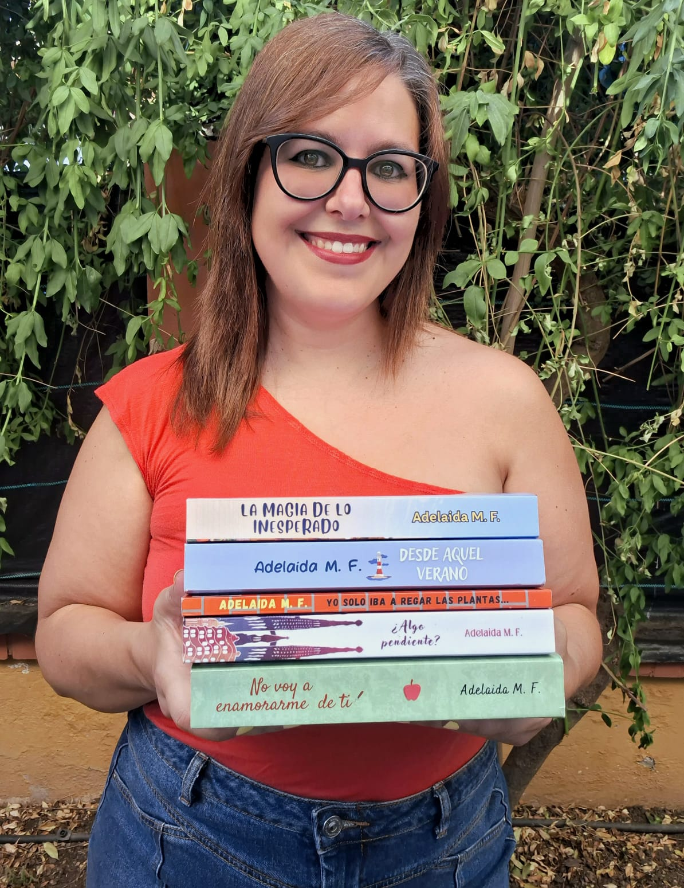

Novela romántica
La Magia de lo Inesperado
Adelaida M. F.
«Porque lo que menos esperas… puede ser justo lo que más necesitas.»
«Porque lo que menos esperas… puede ser justo lo que más necesitas.»
Porque lo que menos esperas… puede ser justo lo que más necesitas.
Adriana lo tiene todo bajo control: es trabajadora, independiente y, después de un matrimonio fallido, ha aprendido a valorar la calma como si fuera oro puro. Comparte piso con su mejor amiga, y la rutina tranquila se ha convertido en su refugio. Hasta que aparece Jaime.
Jaime es el hermano pequeño de su compañera de piso… y «pequeño» no solo en parentesco: tiene trece años menos que Adriana. Pero lo que le falta de años lo compensa con descaro, frescura y una forma de mirarla que consigue desarmarla sin que ella quiera admitirlo. Lo que empieza como un jueguecito inocente, un tira y afloja lleno de miradas y comentarios, pronto se transforma en un huracán de emociones que amenaza con derribar todas las murallas que Adriana había levantado.
Ella lucha entre la sensatez que le dice que no se complique la vida y la chispa que Jaime despierta en su interior, devolviéndole la risa, la pasión y ese cosquilleo que pensaba olvidado.
¿Podrá la razón vencer al deseo? ¿O acabarán comprobando que, a veces, los amores más locos son los que merecen más la pena?
¿Te apetece empezar? Conoce a Adriana en el primer capítulo, gratis.
Leer el primer capítulo¿Quieres tu ejemplar firmado por la autora? Ponte en contacto conmigo a través de mis redes.
Ver mis redes
Nací en Sevilla, aunque actualmente vivo en Granada. Estudié Pedagogía y siento una gran pasión por la lectura, la escritura y la fotografía.
Comencé a escribir pequeñas historias durante mi adolescencia y, poco después, descubrí el mundo de los fanfictions, lo que me animó a compartir mis relatos en plataformas como FanFiction, Potterfics y Wattpad.
La Magia de lo Inesperado es mi novela más reciente, que vio la luz en mayo de 2026.
Déjate llevar por la chispa entre Adriana y Jaime. Disponible en Amazon, junto al resto de novelas de Adelaida M. F.